Interaktivna slika računara
Intel procesori
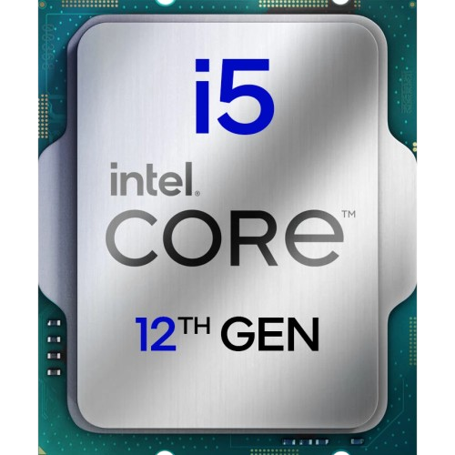
Intel Core i5 12400f
Intel Core i5-12400F ima 6 jezgri i 12 threadova, radi na 2.5 GHz i pripada Alder Lake generaciji. Datum izlaska je Q1 2022. Average Bench iznosi 98.1%, a rang je 113 od 1424 procesora, na osnovu 54.052 korisnička testa. Raspon rezultata, odnosno razlika između 95. i 5. percentila, iznosi 19.6%, što znači da su rezultati ovog procesora prilično stabilni u različitim računarima.
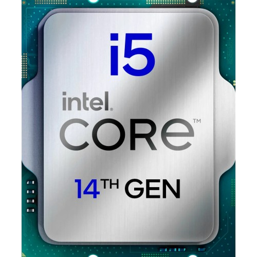
Intel Core i5 14400f
Intel Core i5-14400F ima 10 jezgri i 16 threadova, radi na 2.5 GHz i pripada Raptor Lake generaciji. Datum izlaska je približno Q1 2024. Average Bench iznosi 107%, a rang je 70 od 1424 procesora, na osnovu 1.254 korisnička testa. Raspon rezultata, odnosno razlika između 95. i 5. percentila, iznosi 15%, što pokazuje dosta ujednačene rezultate.
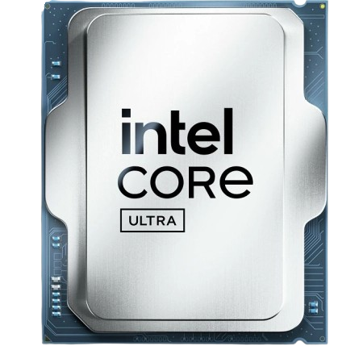
Intel Core Ultra 7 265K
Intel Core Ultra 7 265K ima 20 jezgri i 20 threadova, radi na 3.9 GHz i pripada Arrow Lake generaciji. Datum izlaska je Q4 2024. Average Bench iznosi 119%, a rang je 31 od 1424 procesora, na osnovu 536 korisničkih testova. Raspon rezultata, odnosno razlika između 95. i 5. percentila, iznosi 57.5%, što znači da rezultati mogu dosta zavisiti od ostatka konfiguracije, hlađenja i podešavanja sistema.
Intel Core i5-14600K
Intel Core i5-14600K ima 14 jezgri i 20 threadova, radi na 3.5 GHz i pripada Raptor Lake generaciji. Datum izlaska je Q4 2023. UserBenchmark ga opisuje kao procesor sa izuzetno dobrim prosječnim rezultatom, oko 23.7% iznad vršnih rezultata grupe, što ga stavlja među veoma jake desktop procesore. Dobar je za gaming, multitasking, streaming i zahtjevnije programe.
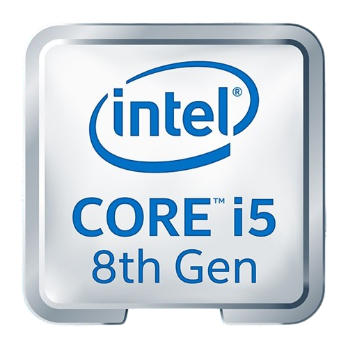
Intel Core i5-8400
Intel Core i5-8400 ima 6 jezgri i 6 threadova, radi na 2.8 GHz bazno i do 4.0 GHz u turbo režimu. Pripada 8. Intel generaciji, Coffee Lake arhitekturi, i koristi 14 nm proizvodni proces. Datum izlaska je Q4 2017. Intel navodi da ima 9 MB Smart Cache memorije, TDP 65W i podršku za DDR4-2666 RAM. UserBenchmark ga opisuje kao 6 Cores, 6 Threads @ 2.8GHz, Coffee Lake. Dobar je za osnovni rad, školu, internet, kancelarijske programe i lakši gaming, ali je danas slabiji izbor za novije zahtjevne igre i ozbiljan multitasking.
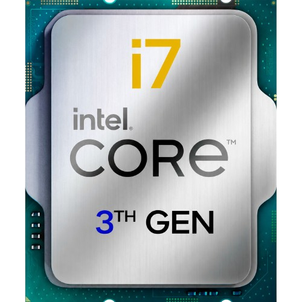
Intel Core i7-3770-
Intel Core i7-3770 ima 4 jezgre i 8 threadova, radi na 3.4 GHz, a turbo ide do 3.9 GHz. Pripada Ivy Bridge generaciji i izašao je 2012. godine. UserBenchmark poređenja navode Average Bench: 69%. Danas je stariji procesor, ali još može poslužiti za osnovni rad, starije igre i jednostavnije zadatke, posebno ako računar ima SSD i dovoljno RAM-a.
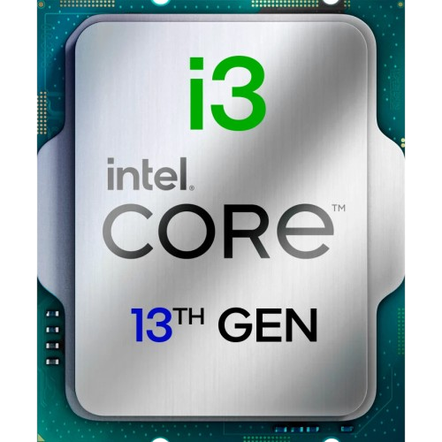
Intel Core i3-13100-
Intel Core i3-13100 ima 4 jezgre i 8 threadova, radi do oko 4.5 GHz i pripada 13. Intel generaciji. Datum izlaska je Q1 2023. UserBenchmark poređenja navode Average Bench: 96%. Iako je i3, dobar je za osnovni rad, školu, internet, kancelarijske programe i lakši gaming, ali nije idealan za teži multitasking ili profesionalne programe.
AMD procesori
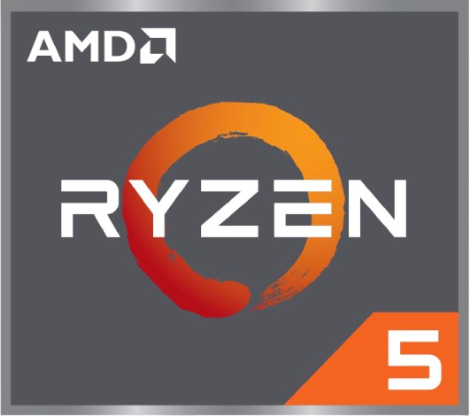
AMD Ryzen 5 5500
AMD Ryzen 5 5500 ima 6 jezgri i 12 threadova, radi na 3.6 GHz i pripada Zen 3 generaciji. Datum izlaska je približno Q2 2022. Average Bench iznosi 85.9%. Raspon rezultata, odnosno razlika između 95. i 5. percentila, iznosi 29.5%, što znači da performanse mogu malo više zavisiti od RAM memorije, matične ploče i podešavanja sistema.
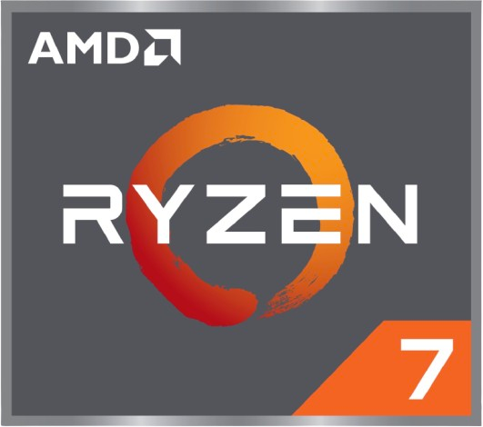
AMD Ryzen 7 9800X3D
AMD Ryzen 7 9800X3D ima 8 jezgri i 16 threadova, radi na 4.7 GHz i pripada Zen 5 generaciji. Datum izlaska je Q4 2024. Average Bench iznosi 128%, a rang je 10 od 1424 procesora, na osnovu 15.972 korisnička testa. Raspon rezultata, odnosno razlika između 95. i 5. percentila, iznosi 13%, što pokazuje vrlo stabilne rezultate u različitim računarima.
AMD Ryzen 7 5700X
AMD Ryzen 7 5700X ima 8 jezgri i 16 threadova, radi na 3.4 GHz i pripada Zen 3 generaciji. Datum izlaska je približno Q2 2022. Average Bench iznosi 96%, a rang je 137 od 1424 procesora, na osnovu 13.351 korisničkog testa. Raspon rezultata, odnosno razlika između 95. i 5. percentila, iznosi 25.8%, što znači da su rezultati relativno ujednačeni.
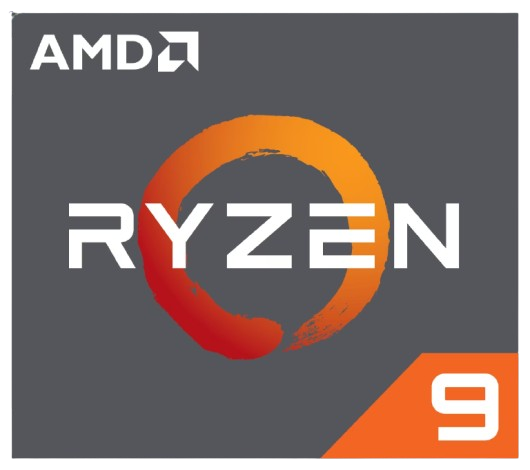
AMD Ryzen 9 7900X
AMD Ryzen 9 7900X ima 12 jezgri i 24 threada, radi na 4.7 GHz i pripada Zen 4 generaciji. Datum izlaska je Q3 2022. UserBenchmark poređenja navode Average Bench: 113%, a AMD navodi da je procesor namijenjen za gaming i streaming, sa 12 jezgri, 24 threada i baznim taktom 4.7 GHz. Odličan je za zahtjevan rad, rendering, multitasking i jače gaming konfiguracije.
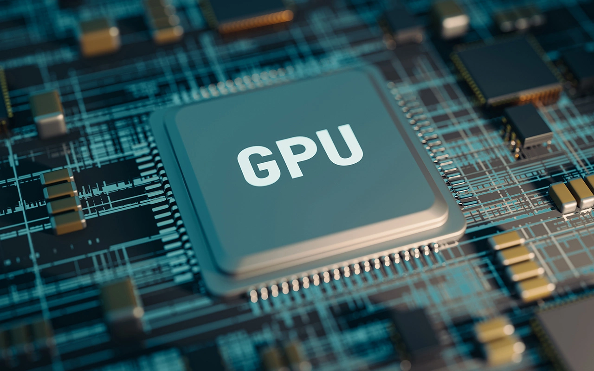
GPU - Graphics Processing Unit
NVIDIA grafičke kartice
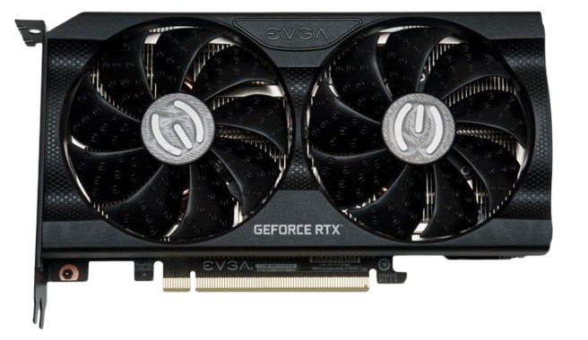
GeForce NVIDIA RTX 3050
NVIDIA GeForce RTX 3050 je ulazna RTX kartica, zasnovana na Ampere arhitekturi. Ima 8GB GDDR6 memorije i podržava ray tracing i DLSS, ali je najviše za 1080p gaming na srednjim ili nižim postavkama. UserBenchmark navodi Average Bench: 31%. GPU Monkey navodi 8GB GDDR6 memorije, 128-bit memorijsku magistralu i memorijsku propusnost od 224 GB/s.
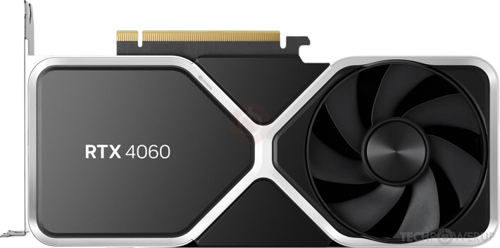
GeForce NVIDIA RTX 4060
NVIDIA GeForce RTX 4060 je kartica srednje/niže klase iz RTX 40 serije, zasnovana na Ada Lovelace arhitekturi. Ima 8GB GDDR6 memorije, 128-bit magistralu, 3072 CUDA jezgre i TGP oko 115W. UserBenchmark navodi Average Bench: 50.9%, rang 54 od 453 GPU-a. Dobra je za 1080p gaming, DLSS 3 i energetski efikasne konfiguracije.
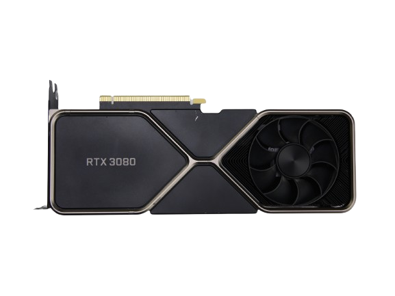
GeForce NVIDIA RTX 3080
NVIDIA GeForce RTX 3080 je jaka kartica iz RTX 30 serije, zasnovana na Ampere arhitekturi. Najčešće dolazi sa 10GB GDDR6X memorije i namijenjena je za jak 1440p gaming i 4K gaming. UserBenchmark navodi Average Bench: 78.9%, rang 23 od 453 GPU-a. U odnosu na novije RTX 50 kartice nema DLSS 4/Multi Frame Generation, ali je i dalje vrlo snažna kartica za klasični raster gaming.
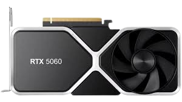
GeForce NVIDIA RTX 5060
NVIDIA GeForce RTX 5060 je novija Blackwell kartica iz RTX 50 serije. Ima 8GB GDDR7 memorije, 128-bit magistralu, 3840 CUDA jezgri i podržava DLSS 4 sa Multi Frame Generation tehnologijom. UserBenchmark navodi Average Bench: 61.2%. NVIDIA navodi da RTX 5060 koristi Blackwell arhitekturu, 8GB GDDR7 memorije, 3840 CUDA jezgri i boost clock oko 2.50 GHz.
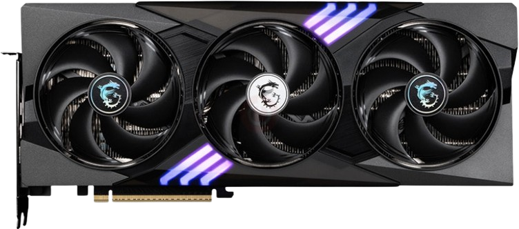
GeForce NVIDIA RTX 5070
NVIDIA GeForce RTX 5070 je Blackwell grafička kartica srednje više klase. Ima 12GB GDDR7 memorije, 192-bit memorijsku magistralu, 6144 CUDA jezgre i boost clock oko 2.51 GHz. Namijenjena je najviše za jak 1440p gaming, ray tracing i DLSS 4. UserBenchmark navodi Effective Speed: +59%, Average Score: +76% i Overclocked Score: +74%. NVIDIA navodi 12GB GDDR7 memorije i 672 GB/s memorijske propusnosti.
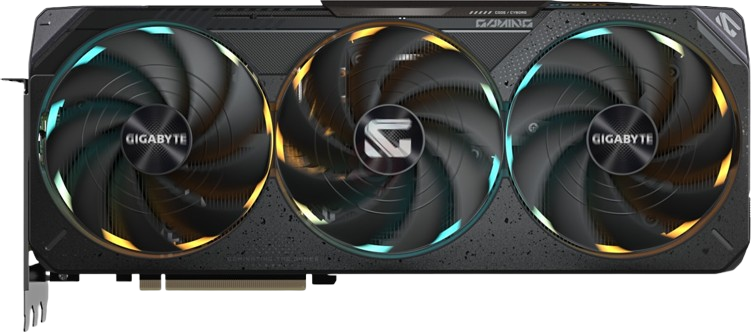
GeForce NVIDIA RTX 5080
NVIDIA GeForce RTX 5080 je visoka klasa RTX 50 serije, zasnovana na Blackwell arhitekturi. Ima 16GB GDDR7 memorije, 256-bit magistralu, 10752 CUDA jezgre i boost clock oko 2.62 GHz. Namijenjena je za 4K gaming, ray tracing, DLSS 4 i zahtjevnije kreativne zadatke. UserBenchmark navodi Effective Speed: +124%, Average Score: +172% i Overclocked Score: +173%. NVIDIA navodi 16GB GDDR7 memorije i 960 GB/s memorijske propusnosti.
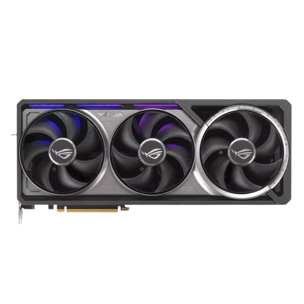
GeForce NVIDIA RTX 5090
NVIDIA GeForce RTX 5090 je najjača kartica iz RTX 50 serije, zasnovana na Blackwell arhitekturi. Ima 32GB GDDR7 memorije, 512-bit memorijsku magistralu i vrlo visoku propusnost memorije od oko 1792 GB/s, pa je namijenjena za 4K gaming, ray tracing, AI rad i profesionalne zadatke. UserBenchmark navodi Effective Speed: +195%, Average Score: +281% i Overclocked Score: +295%. NVIDIA navodi da RTX 5090 koristi Blackwell arhitekturu i 32GB GDDR7 memorije.
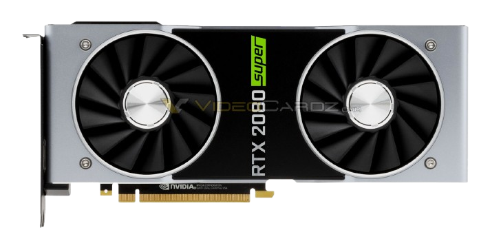
GeForce NVIDIA RTX 2080 Super
NVIDIA GeForce RTX 2080 Super je starija, ali još uvijek solidna grafička kartica iz Turing generacije. Ima 8GB GDDR6 memorije, 256-bit memorijsku magistralu i memorijsku propusnost oko 496 GB/s. Datum izlaska je Q3 2019. UserBenchmark navodi Average Bench: 53.8%, rang 46 od 453 GPU-a, na osnovu 408.415 korisničkih testova. Dobra je za 1080p i 1440p gaming, ali je slabija od novijih RTX 40/50 kartica u ray tracingu i novim AI funkcijama.
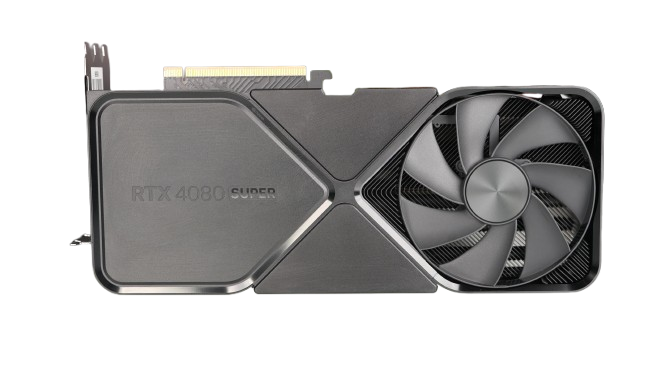
GeForce NVIDIA RTX 4080 Super
NVIDIA GeForce RTX 4080 Super je veoma jaka grafička kartica visoke klase, zasnovana na Ada Lovelace arhitekturi. Ima 16GB GDDR6X memorije i odličan je izbor za 1440p i 4K gaming, ray tracing, DLSS i zahtjevniji kreativni rad. Datum izlaska je januar 2024. UserBenchmark navodi Average Bench: 126%, rang 4 od 453 GPU-a, na osnovu 17.475 korisničkih testova.
AMD grafičke kartice
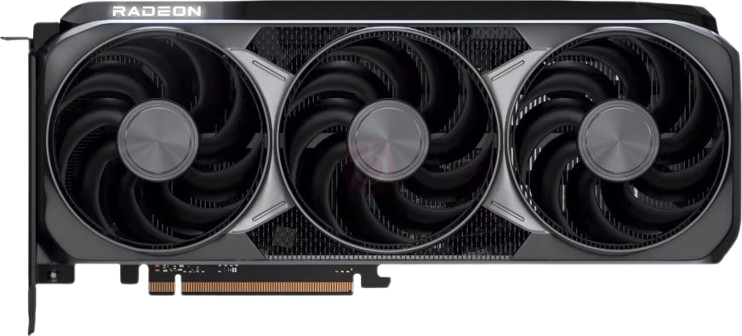
AMD Radeon RX 9070XT
AMD Radeon RX 9070 XT je jaka moderna grafička kartica iz RX 9000 serije, zasnovana na RDNA 4 arhitekturi. Ima 16GB GDDR6 memorije i namijenjena je za vrlo dobar 1440p gaming, a može se koristiti i za 4K uz podešavanje detalja. UserBenchmark navodi Average Bench: 97.3%, rang 11 od 453 GPU-a. Tom’s Hardware navodi da RX 9070 XT donosi snažne mainstream performanse, bolji ray tracing i AI napredak u odnosu na ranije AMD generacije.
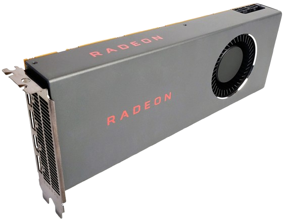
AMD Radeon RX 5700
AMD Radeon RX 5700 je starija AMD kartica iz RDNA 1 generacije. Ima 8GB GDDR6 memorije i Navi 10 GPU, a bila je namijenjena kao srednja klasa za 1080p i 1440p gaming. UserBenchmark navodi Average Bench: 35.8%, rang 98 od 453 GPU-a. Technical City navodi da je RX 5700 izašao 7. jula 2019. i da koristi RDNA 1.0 arhitekturu.
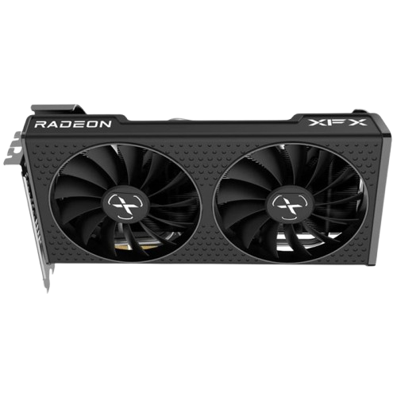
AMD Radeon RX 6500XT
AMD Radeon RX 6500 XT je budžetska AMD grafička kartica iz RDNA 2 generacije. Obično dolazi sa 4GB GDDR6 memorije i više je namijenjena osnovnom 1080p gamingu, ali nije dobra za novije zahtjevne igre na visokim detaljima. UserBenchmark navodi Average Bench: 21.1% i da je kartica oko 78.9% ispod vrha grupe. Technical City navodi da je RX 6500 XT izašao 19. januara 2022. i da koristi RDNA 2.0 arhitekturu.
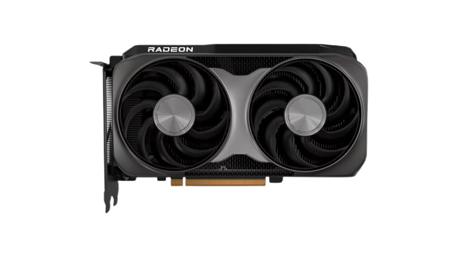
AMD Radeon RX 9060XT
AMD Radeon RX 9060 XT je novija AMD grafička kartica iz RX 9000 serije, zasnovana na RDNA 4 arhitekturi i Navi 44 čipu. Dolazi u 8GB i 16GB GDDR6 verzijama, sa 128-bit magistralom i memorijskom propusnošću oko 320 GB/s. Datum izlaska je juni 2025. UserBenchmark navodi Average Bench: 64.2%, rang 34 od 453 GPU-a, na osnovu 355 korisničkih testova. Dobra je za 1080p i 1440p gaming, posebno ako se uzme 16GB verzija.
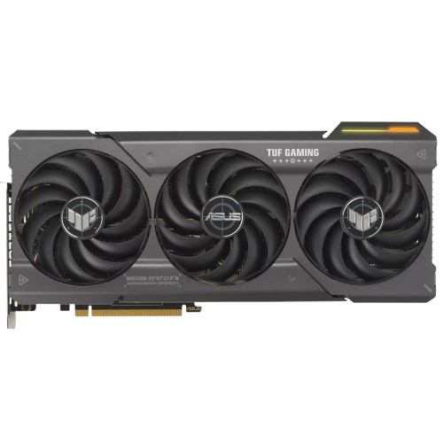
AMD Radeon RX 7800XT
AMD Radeon RX 7800 XT je grafička kartica srednje više klase, zasnovana na RDNA 3 arhitekturi. Ima 16GB GDDR6 memorije i dobar je izbor za 1440p gaming, a može poslužiti i za 4K uz smanjenje detalja. Datum izlaska je Q3 2023. UserBenchmark poređenja navode Average Bench: 75.6%, dok GPU Monkey navodi 16GB GDDR6 memorije i TDP oko 263W.
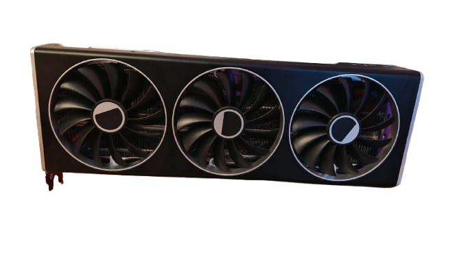
AMD Radeon RX 7900XTX
AMD Radeon RX 7900 XTX je jaka AMD grafička kartica visoke klase iz RDNA 3 generacije. Ima 24GB GDDR6 memorije i namijenjena je za 4K gaming, visoke detalje i zahtjevnije grafičke zadatke. Datum izlaska je Q4 2022. UserBenchmark navodi Average Bench: 108%, rang 7 od 453 GPU-a. Zbog velike količine VRAM-a pogodna je i za igre i programe koji traže dosta grafičke memorije.
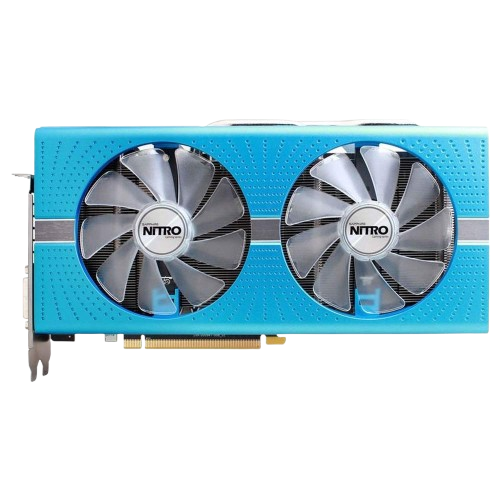
AMD Radeon RX 590
AMD Radeon RX 590 je starija AMD grafička kartica iz Polaris generacije. Ima 8GB GDDR5 memorije, 256-bit memorijsku magistralu i više je namijenjena osnovnom 1080p gamingu. Datum izlaska je novembar 2018. UserBenchmark navodi Average Bench: 23.7%, rang 128 od 453 GPU-a. Danas je korisna za manje zahtjevne igre, ali nije najbolji izbor za novije naslove na visokim detaljima.
Intel grafičke kartice
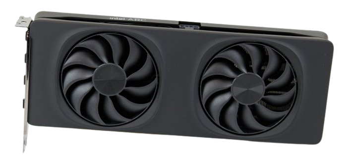
Intel Arc B580
Intel Arc B580 je Intelova grafička kartica novije generacije, zasnovana na Xe2/Battlemage arhitekturi. Ima 12GB GDDR6 memorije, što je dobro za novije igre koje traže više VRAM-a. UserBenchmark navodi da je B580 oko 53.8% ispod vrha grupe, a iz poređenja se vidi Average Bench: 46.1%. TechSpot navodi da je Arc B580 izašao kao povoljna kartica sa 12GB VRAM-a i dobrim odnosom cijene i performansi.
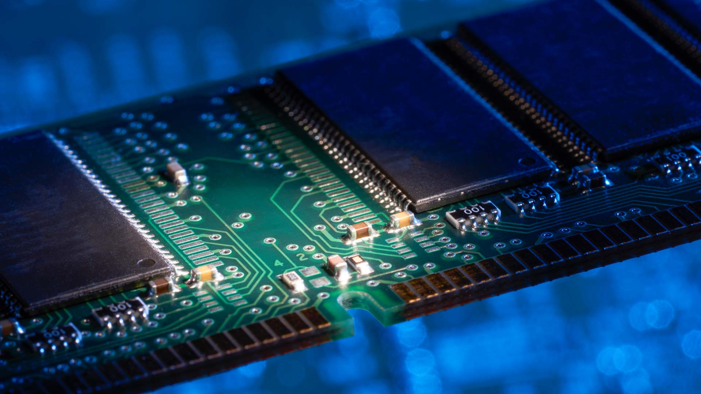
RAM - Random Access Memory
8GB RAM-a je dovoljno za osnovni rad, internet, online nastavu, gledanje videa i korištenje Office programa. 16GB je najbolji izbor za većinu korisnika, posebno za gaming, više otvorenih programa, browser sa mnogo tabova i ugodan svakodnevni rad. 32GB se preporučuje za zahtjevnije korisnike koji rade video obradu, programiranje, 3D alate, veće projekte ili često koriste više težih programa odjednom. Više od 32GB RAM-a uglavnom je potrebno za profesionalni rad, virtualne mašine, velike baze podataka, ozbilj
Poređenje komponenti
| Komponenta | Namjena | Primjer | Preporuka |
|---|---|---|---|
| CPU | Obrada podataka | Ryzen 5/Intel i5 | Gaming i svakodnevni rad |
| GPU | Obrada slike | RTX 4060/RX 6600 | Gaming i grafika |
| RAM | Privremena memorija | 16GB DDR4 | Dovoljno za većinu korisnika |
| SSD | Brza pohrana podataka | 1TB NVMe | Brže učitavanje sistema i igara |
| Kućište | Kontejner za sve kompontente | Razne vrste | Uljepšavanje računara |
Vrste komponenti
-
Procesori
- Intel
- AMD
-
Grafičke kartice
- NVIDIA
- AMD Radeon
- Intel Arc
-
Memorija
- DDR4
- DDR5